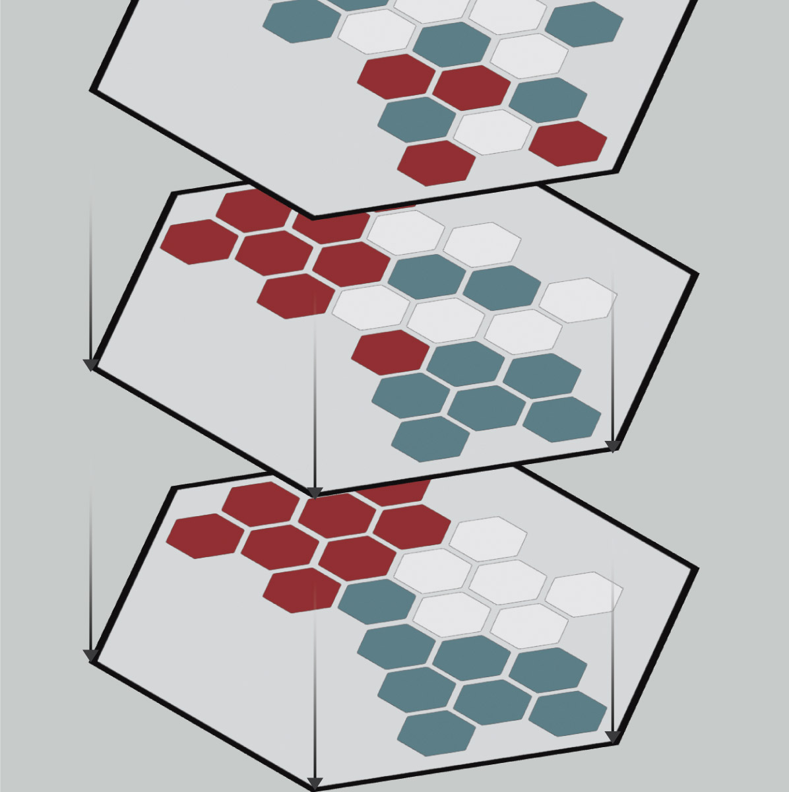
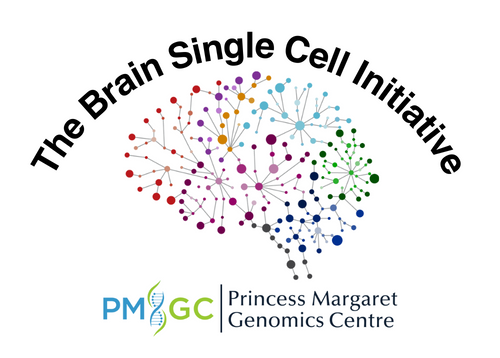

Introductory Spatial 'Omics Analysis: Visium HD

I Welcome
Welcome
Class Photo
Course Materials
Course Schedule
Pre-workshop Materials
Meet Your Faculty
AWS setup instructions
Course data downloads
Amazon Machine Image
II Modules
Opening Presentation: Introduction to Spatial Single Cell RNA-Seq Technologies
Lecture Recording
Lecture Slides
Module 0: Panorama of Spatial Biology
Lecture Recording
Lecture Slides
Module 1a: Garbage In, Garbage Out
Lecture Recordings
Lecture Slides
Module 1b: Histology Preparation for Visium HD
Lecture Recordings
Lecture Slides
Module 2: Normalization and Transforming Your Data
Lecture Recording
Lecture Slides
Scripts
Module 3: Building Your Spatial Model
Lecture Recording
Lecture Slides
Scripts
Module 4: Gene Enquiry and Visualization
Lecture Recording
Lecture Slides
Scripts
Module 5: Visualizing Gene Expression in Tissue Context
Lecture Recording
Lecture Slides
Scripts
Module 6: Computational Scaling and Conclusion
Lecture Recording
Lecture Slides
Scripts
Concluding Remarks
Lecture Recording
Lecture Slides
Sponsors

Published with bookdown
Introductory Spatial ’Omics Analysis: Visium HD
Module 1a: Garbage In, Garbage Out
Lecture Recordings
Lecture Slides
Download Module 1a slides:
PDF
|
PPTX